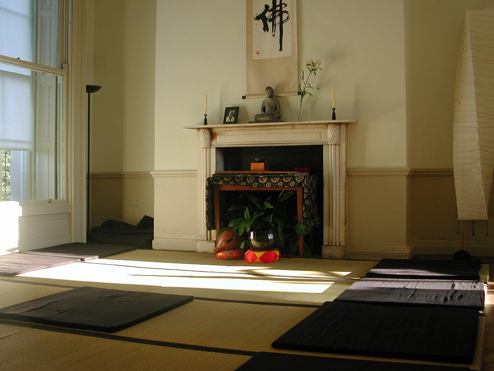

Dublin Dojo
1 Upper Gardiner Street, Dublin 1 (near Mountjoy Square)
Meditation times:
Monday: 7am
Tuesday: 7am
Wednesday: 7am; 6.15pm
Thursday: 7am
Sunday: 6.15pm; beginner's introduction at 5.40pm
Please arrive 10 minutes before the scheduled start.
There is no meditation on the Sunday and Monday of Bank Holiday
weekends.
Contact:
Mary: 085 779 6319
You can also contact us by email: .
Please state that
you want information for the Dublin dojo.
Zazen Day, Sunday December 16. It will be a day of silence, zazen and a little bit of samu (work). We begin at 8 40 am and will end around 5pm. Organic vegetarian lunch will be served.
Send an email if you would like to come.
